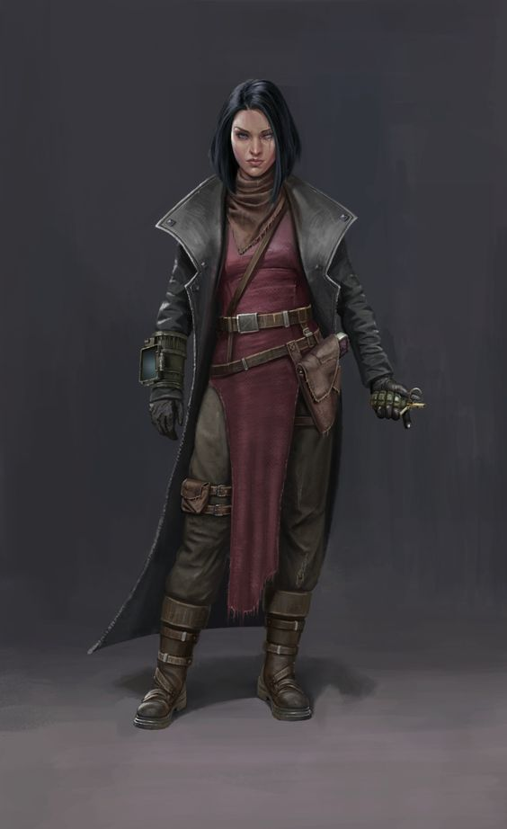

 Kalista is an Enforcer of the Brokers Guild one of the three major powers reigning over the Enlighted City. Still at the dawn of her career journey, Kalista was given a task, as the guilds were getting unsettled by the sudden flares of the chorus within the Respite of the Abandoned. Her task was clear - obtain the info on the strange ailment, and bring it back.Fate had it Kalisto found a research object in Therakir, and cut a deal with the party, following them from then on upon the path of danger and success.
Powers
1) Scrappy, inventive, adapting
Kalista learned the trade at a very young age. Being a kid of a newly promoted Tradesman Guild official,
she experienced life through the lens of ingenuity and resourcefulness, that her father carried on with
him, from the days of poverty and strife. Money was scarce for him, yes.... But useful materials are so
much more rare for the ones with slender wallets, and as a consequence status amongst the peers. This
gave the educated yet poor citizen of the Lower South Twuct and Ternosmog an incentive to adapt.
Kalisto’s father liked to lecture his daughter after an exhausting day at work, preaching the gospel of
smart and resourceful living.
-A rusty screw on the ground with proper polish can become a trusty recoil compensator in your
homemade shotgun, a piece of dirty bloodied clothing can, with a nice wash perfectly isolate that nasty
crack in the wall of your down under apartment, that was lettin’ the cold air through.
Age: 24; Height: 1.80m; Weight: 70kg. Str: 9 Dex: 18 Con: 12 Int: 20 Wis: 18 Cha: 10.